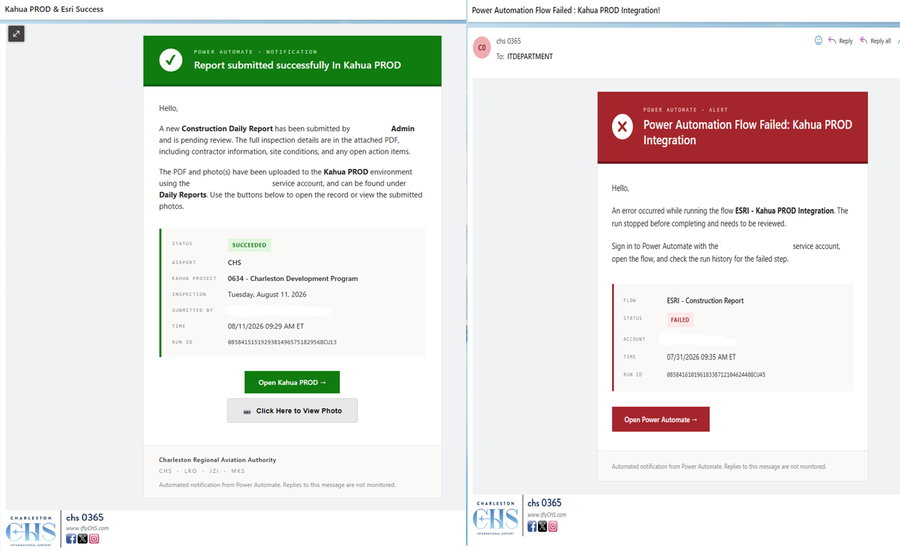

This project is mainly for the Engineering Department. When a user submits an Esri Survey123 form, a Power Automate flow is triggered. Once the flow runs, it generates a PDF report, sends an email notification, and inserts the report directly into Kahua.
The goal is to remove the manual work of turning a field survey into a filed construction report. Every submission becomes a Kahua record on its own, and the IT Department is notified right away if a run succeeds or fails, so nothing sits unnoticed.
An Esri Survey123 form collects the field data. Submitting the form triggers a Power Automate flow, which builds a PDF report from the responses, uploads the report and any photos into Kahua, and emails a notification confirming the outcome.
If the Power Automate flow is successful, a green email is sent. If it fails, a red email is sent to notify the team that the flow has failed. This allows the IT Department to troubleshoot tasks in a timely and orderly manner.
This project has no code reference.
Field inspections now turn into filed Kahua records automatically, with a clear email confirming whether the run succeeded or failed. This gives the Engineering and IT Departments a fast, dependable way to know the status of every submission.